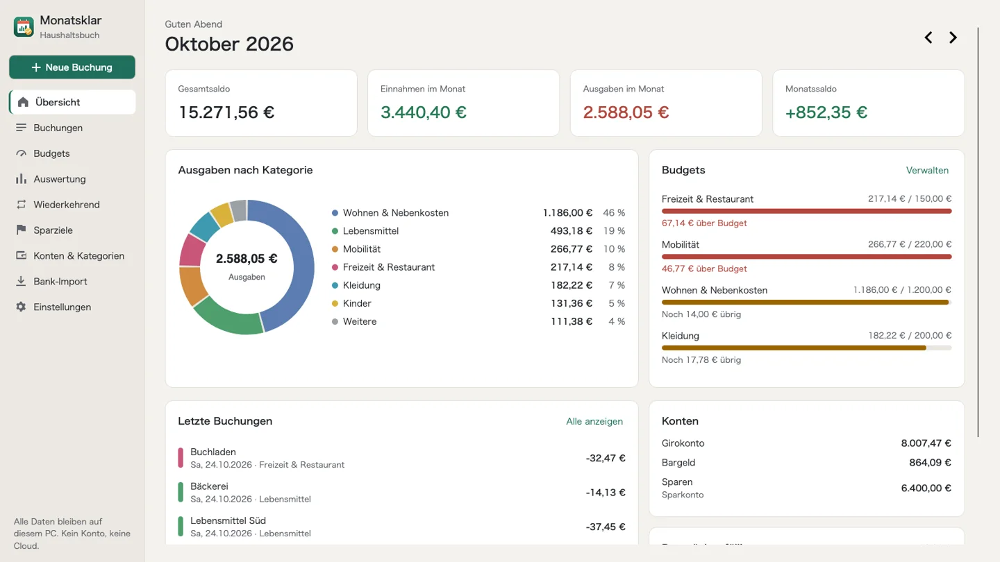
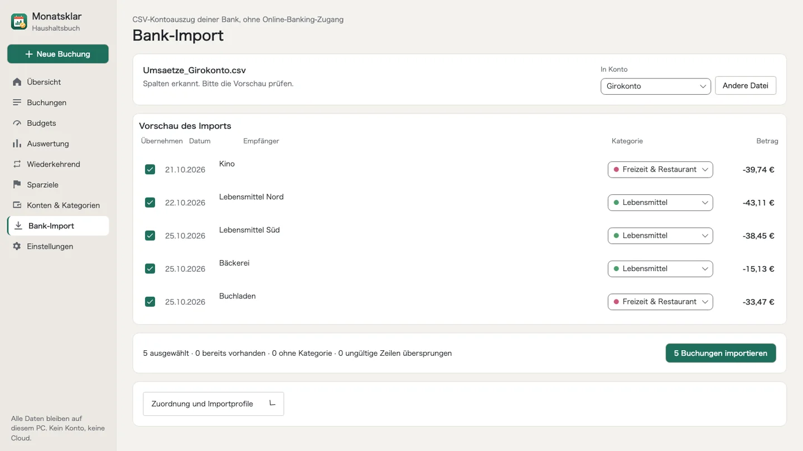
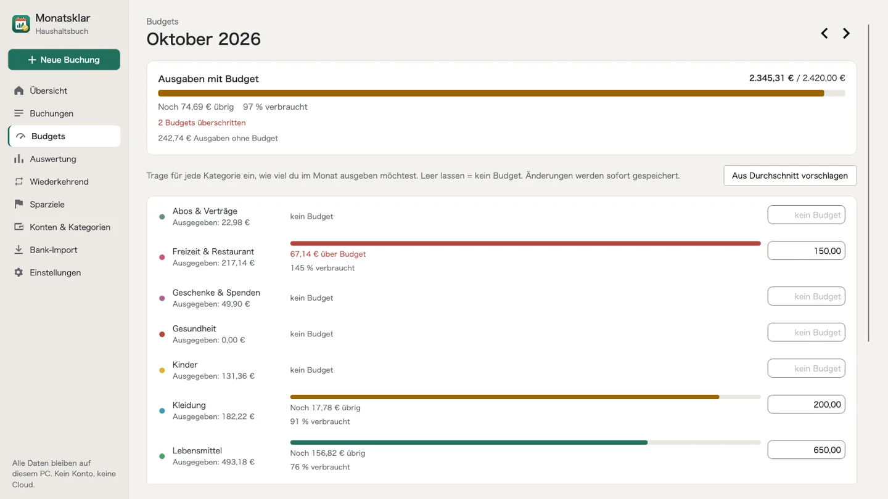
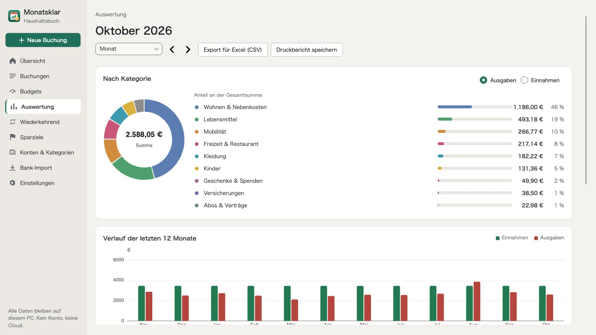

01
Schnell erfasst. Gut sortiert.
Buchungen per Tastatur erfassen, Beträge in Teilbuchungen aufteilen und mit eigenen Kategorien und Unterkategorien ordnen.
Dein Monat. Klar im Blick.
Wissen, was reinkommt. Sehen, was übrig bleibt. Dein Haushaltsbuch für Windows – mit Budgets, Bankimport und einem guten Gefühl für deine Finanzen.
Einmalkauf · Kein Abo · Kein App-Konto

Für deinen Alltag gemacht
Vom ersten Kaffee bis zum großen Sparziel. Monatsklar bringt Ordnung in deine Zahlen, ohne deinen Alltag komplizierter zu machen.
Buchungen per Tastatur erfassen, Beträge in Teilbuchungen aufteilen und mit eigenen Kategorien und Unterkategorien ordnen.
Monatsbudgets zeigen, was noch übrig ist. Wiederkehrende Buchungen und Sparziele behalten auch das Morgen im Blick.
Girokonto, Bargeld, Sparen und Kreditkarten. Wähle die Währung für dein Buch; Umbuchungen bleiben von Ausgaben getrennt.
Kategorien, Monatsverlauf und Sparquote verstehen. Daten als CSV exportieren oder den Druckbericht als PDF speichern.
Ein Blick in Monatsklar
Eine ruhige Oberfläche, die sich auf das Wesentliche konzentriert: deinen Monat.



Hell oder dunkel? Die App folgt Windows – oder deiner Wahl.
Deine Bank. Dein Import.
Exportiere deine Umsätze als CSV und importiere sie lokal. Kein Bank-Login, keine direkte Bankverbindung. Einmal zugeordnet, kannst du die Einstellungen als Importprofil speichern.
So funktioniert der ImportVerifizierte CSV-Varianten
Weitere Formate über manuelle Spaltenzuordnung und Importprofile. Je nach Datei kann eine Vorbereitung nötig sein.
Erkennung gilt für bestimmte Exportvarianten: Chase Giro/Kreditkarte, Bank of America Giro, Capital One Kreditkarte. Regionale und neue Formate können abweichen. Vorschau, Datum, Vorzeichen und Währung immer prüfen. Keine Währungsumrechnung.
Privat bleibt privat
Deine Datei bleibt auf deinem PC. Keine Cloud, keine Werbung, keine Telemetrie. Mit einem Passwort aktivierst du die optionale AES-256-Verschlüsselung. Automatische und manuelle Sicherungen helfen dir, deine Daten zu behalten.
Mehr zum DatenschutzEine klare Entscheidung
Alle Funktionen inklusive. Kein Abo, keine In-App-Käufe, kein App-Konto. Den aktuellen Preis findest du im Microsoft Store.
Deutsch · Englisch · Französisch · Italienisch · Spanisch · Niederländisch · Polnisch · Portugiesisch · Japanisch · Schwedisch
Gut zu wissen
Wo liegen deine Daten, wie funktionieren Sicherungen und was brauchst du unter Windows?
WeiterlesenWas im Kaufpreis steckt, was Monatsklar nicht ist und für wen es sich lohnt.
WeiterlesenDie verifizierten Bankformate, allgemeine Exporthinweise und Stolpersteine beim Import.
WeiterlesenDie App funktioniert offline und ohne App-Konto. Für Kauf und Installation über den Microsoft Store brauchst du eine Internetverbindung; gegebenenfalls ist ein Microsoft-Konto nötig.
Nein. Du exportierst Umsätze bei deiner Bank als CSV und liest die Datei in Monatsklar ein. Bankzugangsdaten werden nicht benötigt.
Ja. Du kannst Buchungen als CSV exportieren, Berichte drucken oder als PDF speichern und deine Haushaltsbuch-Datei sichern. CSV-Exporte sind unverschlüsselt.
Die Währung ist pro Buch wählbar. Alle Konten und Buchungen in diesem Buch verwenden dieselbe Währung. Eine automatische Währungsumrechnung gibt es nicht.